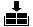
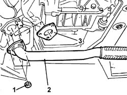
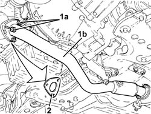
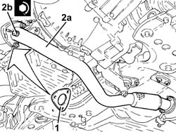

1076B58 exhaust pipe attachment to engine seal/s - replace
- Path
- Procedures > 10 ENGINE > 1076 EXHAUST PIPES AND SILENCERS > 1076B exhaust pipes and silencers > 1076B58 exhaust pipe attachment to engine seal/s - replace
- Kind
- repair procedure (removal / refitting; the operation number is the code)
- Applies to
- engines: 1.9 JTD 8V, 1.9 JTD 16V; all production periods
- Interactive page
- https://sloeber94.github.io/elrnDB-a147/en/#/3025062
Applies to: engines: 1.9 JTD 8V; all production periods
 Removing
Removing

RefittingPlace the car on a ramp.
7055B54 under-engine guard - r r
1. Undo the nuts securing the exhaust pipe to the manifold.
2. Lower the front section of the exhaust pipe.
3. Recover the gasket between exhaust pipe and manifold.

Applies to: engines: 1.9 JTD 8V; all production periods
Refitting
RemovingFit the exhaust pipe gasket.
Tighten the nuts securing the exhaust pipe to the manifold.
Fastening | Component | Ø | Value (daNm) | |
|---|---|---|---|---|
- | Nut | EXHAUST PIPE TO ENGINE | M8 | (catalytic converter) 3 |
7055B54 under-engine guard - r r
Remove the vehicle from the ramp.
Applies to: engines: 1.9 JTD 16V; all production periods
Removing
RefittingPosition the vehicle on the ramp.
Proceed with removal 7055B54 under-engine guard - r r .
1. Undo the nuts (1a) and disconnect the front section of the exhaust pipe (1b) from the catalytic preconverter.
2. Remove the gasket.

Applies to: engines: 1.9 JTD 16V; all production periods
Refitting
Removing1. Place a new gasket in its seat.
2. Connect the front section of the exhaust pipe (2a) to the catalytic preconverter and tighten the nuts (2b) to the recommended torque.
Fastening | Component | Ø | Value (daNm) | |
|---|---|---|---|---|
2b | Nut | PRE-CAT CONVERTOR/CAT CONVERTOR PIPE | M8 | (Catalyitic preconverter side) 2.3 ÷ 2.8 |

Applies to: engines: 1.9 JTD 16V; all production periods
Proceed with refitting 7055B54 under-engine guard - r r .
Remove the car from the ramps.